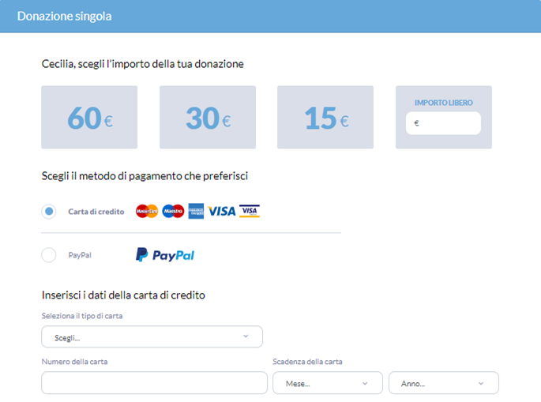

Gestisci le donazioni senza passaggi manuali
Dalla propria area riservata, il sostenitore può effettuare una donazione singola con carta di credito, attivare una donazione regolare tramite IBAN, modificarne l’importo o il metodo di pagamento e aggiungere un contributo extra.
Ogni operazione viene registrata in tempo reale in Mentor, senza richiedere aggiornamenti manuali da parte del team.
Più semplicità per chi dona, meno lavoro operativo per l’organizzazione.